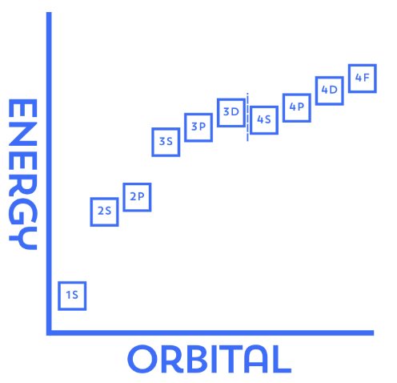

How to Build an Atom
Wait a moment… the third shell can hold up to 18 electrons? How could that be possible when the pattern should be 2-8-8? Actually, how can all noble gases (minus helium) have 8 valence electrons, when future electron shells can hold so many electrons?
The answer is that electrons don’t actually fill orbitals and shells based on their shell number order. They fill it based on energy.
The Aufbau Principle, literally “building up” or “construction” in German, states that electrons fill atomic orbitals of the lowest available energy levels first, before occupying higher energy levels.
Although the outer shells usually have higher energy levels, certain orbitals have less energy than others. For instance, within the same principle shells, s orbitals have less energy than p orbitals, and p orbitals have less energy than d orbitals, and so on.
The issue is, as you go through higher and higher leveled orbitals, their energy levels begin to overlap, meaning that some orbitals of a higher level have lower energy than their lower shell counterparts. Because of this, you will see 4s orbitals being filled before 3d orbitals, which is why the third shell does not stop at 8 electrons. After the 4s orbital is occupied, electrons begin filling the 3d orbitals, allowing the third shell to eventually contain up to 18 electrons.

These overlaps will only get more and more complex the further you go away from the nucleus, but it helps to understand why electrons fill orbitals the way they do. The Aufbau Principle, like almost all laws you have learned in chemistry, is yet again only another useful generalization, which itself has multiple exceptions. But we won’t go deeper than that here.